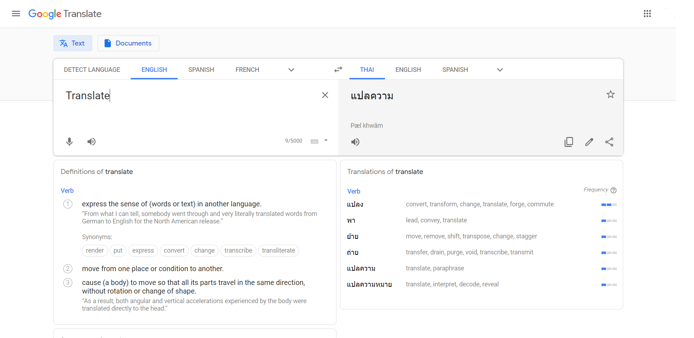
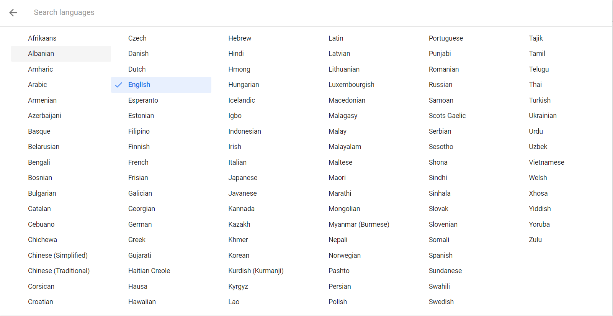

Google Translate
คือ โปรแกรมแปลภาษาโดยอ้างอิงสถิติในการแปล (ซึ่งสามารถแปลได้แบบข้อความและทั้งเว็บ) โดยปกติแล้วโปรแกรมส่วนใหญ่จะใช้แนวทางอ้างอิงกฎ และต้องใช้การนิยามคำศัพท์และไวยากรณ์จำนวนมากในการแปล แต่ทีมงาน Google (กูเกิล) ได้ทำการเพิ่มข้อมูลจำนวนมากให้กับโปรแกรมทั้งภาษาเดียวกันและภาษาปลายทาง และเพิ่มข้อความตัวอย่างการแปลที่แปลโดยมนุษย์ ซึ่งทางทีมงาน Google (กูเกิล) ได้ใช้เทคนิคเชิงสถิติ ให้โปรแกรมอ้างอิงหลักการ กลุ่มคำ ที่มนุษย์ได้ทำการแปลไว้ โดยทีมงาน Google ได้แจ้งไว้ว่าได้ผลลัพท์ที่ดีกว่าวิธีเดิม สำหรับการทำงานของ กูเกิล ทรานสเลท จะใช้คอมพิวเตอร์หลายตัวในการประมวลผล โดยเครื่องนี้จะใช้ในการแปลภาษา เรียกว่า "statistical machine translation" หรือ "ระบบการแปลภาษาเชิงสถิติ" ซึ่งเป็นวิธีที่คอมพิวเตอร์ใช้แปลความหมายของประโยค โดยอ้างอิงจากรูปแบบของข้อความจำนวนมาก เพื่อให้ข้อความที่แปลมีความใกล้เคียงกับภาษามนุษย์ สำหรับ กูเกิล ทรานสเลท ถือว่าเป็นเครื่องมือแปลภาษายังไม่ถูกต้อง 100เปอร์เซ็น เพราะยังมีคำบางคำหรือประโยคบางโยคยังแปลผิด หรือเรียบเรียงผิดอยู่ แต่เครื่องแปลภาษาของกูลเกิลนั้น จดจำและเก็บข้อมูลจากการแปลทั่วโลก จึงทำให้อนาคตข้างหน้าจะสามารถแปลทุกภาษาได้อย่างทุกต้อง
ตัวอย่างหน้าตาของ Google Translate.
มีภาษาให้เลือกมากมาย
สามารถเข้าไปทดลองใช้ได้ที่ > Google Translate.